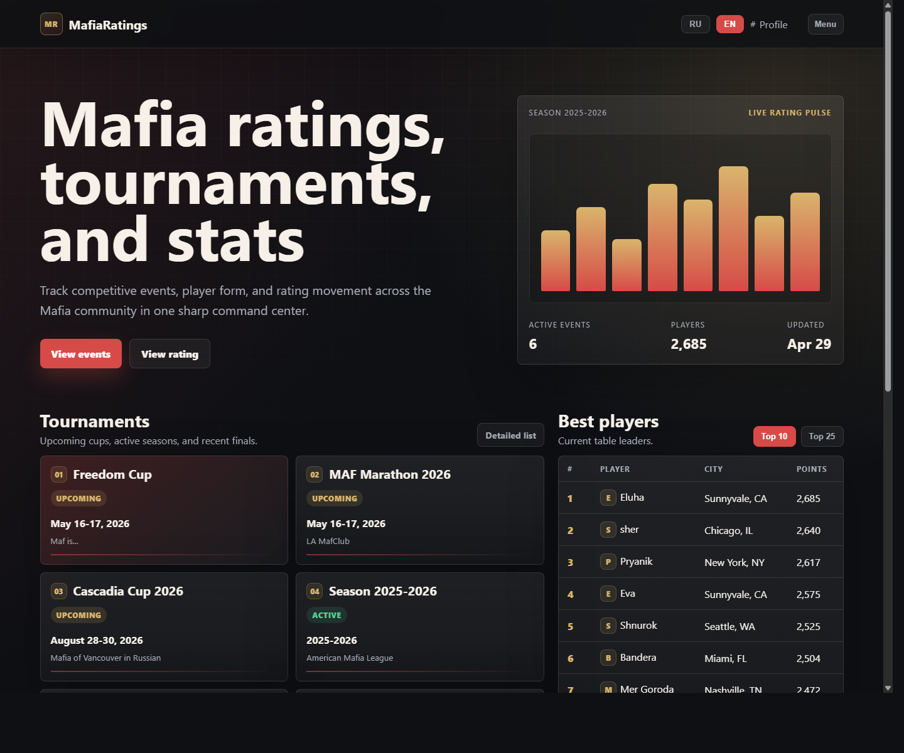
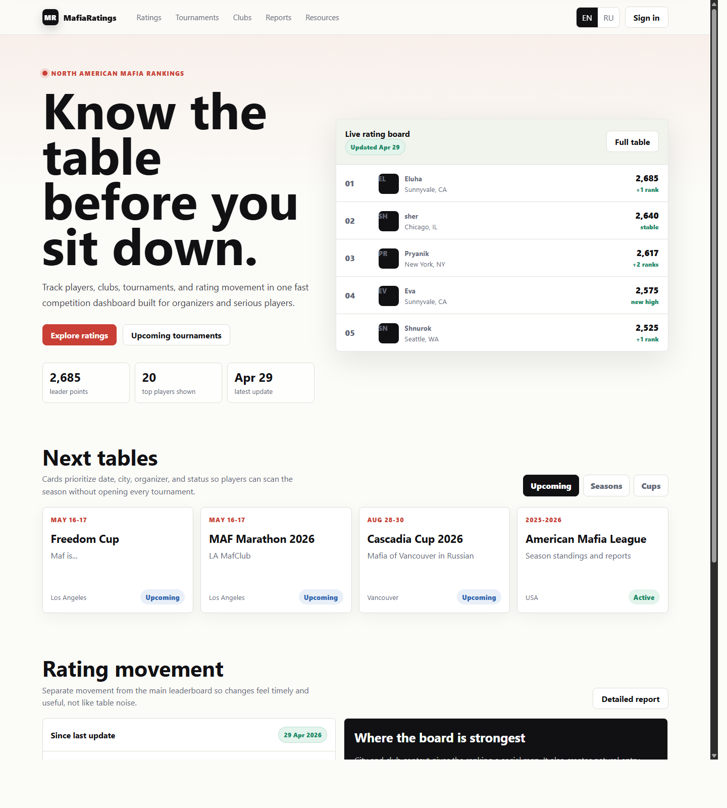
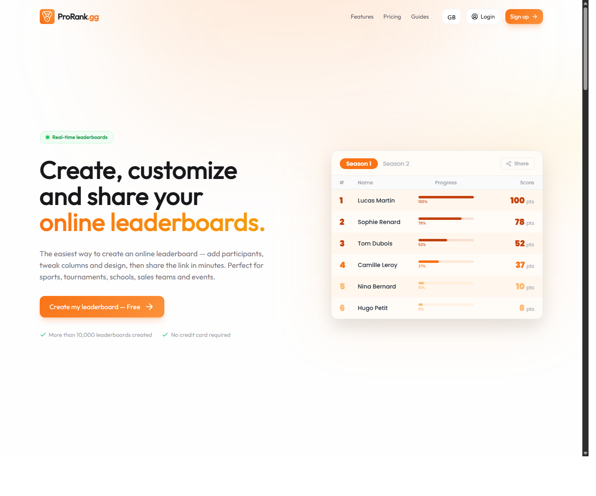
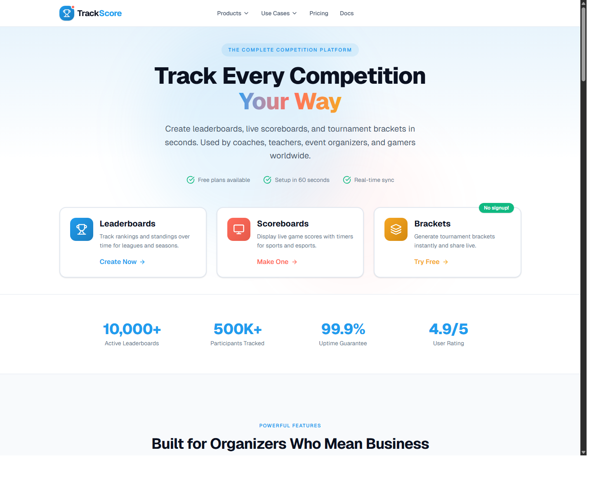
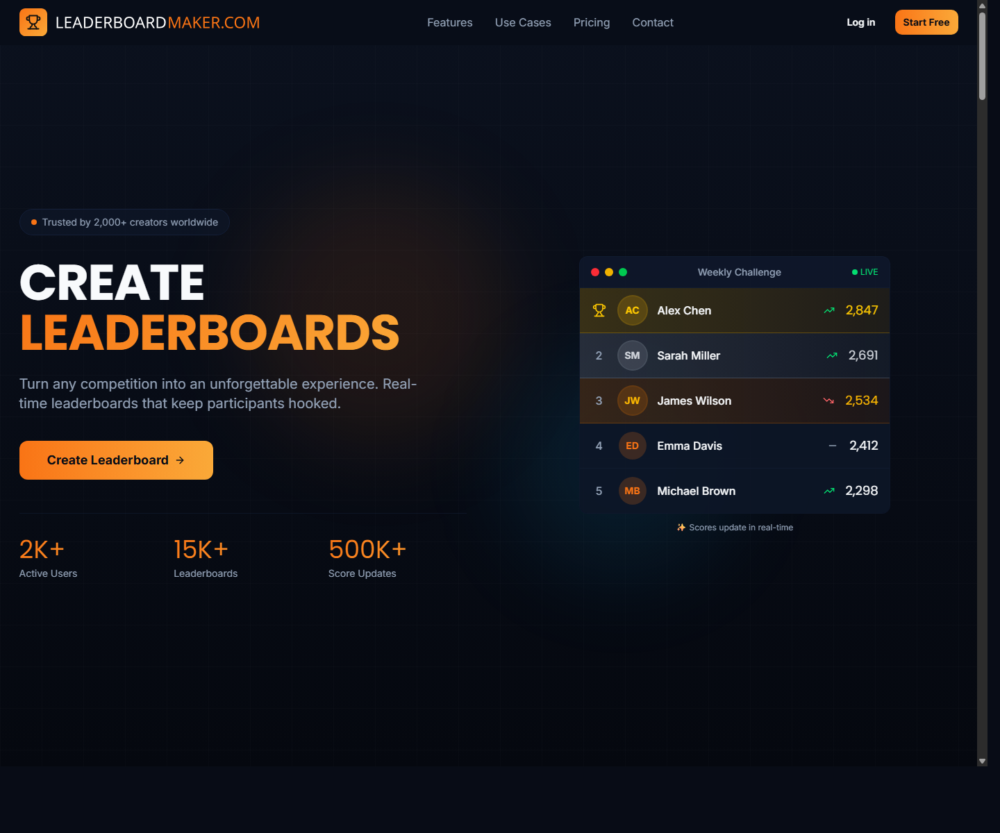

Design Improvement: MafiaRatings Homepage
Turn the homepage into a competition command center: a strong leaderboard hero, compact event cards, and a separate rating-movement module. The current page has the right data, but the visual hierarchy makes everything feel equally important.
Current State

The current homepage is functional and already focused on tournaments, rating changes, and top players. The redesign keeps that data model, but changes the first impression from static list page to live ranking product.
New Concept

Improvement Ideas
1. Make the leaderboard the hero
Lead with the product's most valuable asset: the ranking table. The new concept puts a live rating board next to the headline, so visitors understand the site in one glance.

Source: prorank.gg
Why this works: MafiaRatings is fundamentally a trust and status product. Showing the top board immediately makes the homepage feel current, useful, and specific.
+----------------------+ +---------------------------+ | Know the table... | | Live rating board | | Short value copy | | #1 Player 2,685 | | [Ratings] [Events] | | #2 Player 2,640 | | stat stat stat | | #3 Player 2,617 | +----------------------+ +---------------------------+
2. Separate events from rating movement
Keep tournaments as a clean card grid, then give rating changes their own section. This prevents upcoming events, recent changes, and top players from competing in one cramped layout.

Source: trackscore.online
3. Add a local-scene signal
The current data already contains cities. The concept turns that into a "where the board is strongest" panel, making the rankings feel more human and community-based.

Source: leaderboardmaker.com
4. Modernize the visual system without losing density
Use a lighter editorial sports style: off-white canvas, sharp 8px cards, strong typography, red/green semantic motion, and tabular numbers. Avoid decorative nesting and keep the interface scan-first.
What's Working
- The homepage already knows the right content groups: tournaments, top players, and rating changes.
- Rows and cards are mostly clickable, which is good for exploration.
- The existing bilingual direction is useful and should be preserved after fixing the encoding issue in checked-in HTML.
- Status badges for events are valuable; they just need stronger hierarchy and cleaner placement.
All References
references/current.png- current MafiaRatings local homepage capture.references/modern-concept.png- rendered screenshot of the new concept.references/prorank.png- ranking-first product reference.references/trackscore.png- tournament and event-tracking reference.references/leaderboardmaker.png- leaderboard product reference.